Introduction
The topic of
Egyptian fractions
satisfies all mathematical tastes, from the
entirely elementary
to the really
quite advanced
(see later the Erdös-Strauss conjecture, or the unsolved odd-greedy algorithm problem). The renowned US mathematician Ron Graham did his PhD on Egyptian fractions (his supervisor D.H. Lehmer); see Paul Hoffman's
The Man Who Loved Only Numbers
, pages 153-157.
(Incidentally, Erdös, Strauss, Graham, and Lehmer are all in the
Oxford 1969
photograph in my web site; click on the Oxford 1969 box in my homepage: www.spd.dcu.ie/johnbcos)
All that is needed for
initial
engagement is to be numerically competent in handling 'fractions'. Specifically one must be able to carry out numerical computations like:
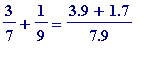 = 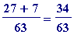 ,
or 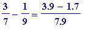 = 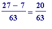
or (at a later stage, when proofs are considered) their algebraic counterparts:
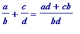 ,
or
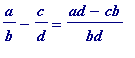
In a school (or college, or at home) all one would have to do - to arouse interest (and interest is everything; without it one can do nothing) - is to start from an a simple 'exercise'
like
: express in simpler terms.../find the simpler fractional form of.../add up the following sum.../(whatever language you choose):
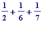
... (i)
One might be offered many solutions.
- 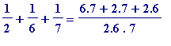 = 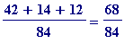 = 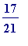
- 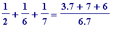 = 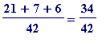 =
-
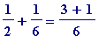
=
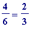
, and so
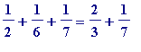
=
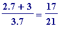
etc , etc
(Of course one could so easily be given: 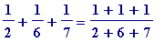 ... Time to apply for early rerirement... )
Then one may pose the question: can the fraction 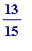 be expressed in the manner of (i) above? (one might prefer - given the level of the individual/group - to start with simpler examples like 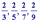 , ... and perhaps see patterns emerge (and formulate precise statements, and prove those statements), and then take others like 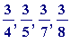 , ... )
In a nutshell, the above ( can be ... ) is just a particular case of the general Egyptian fraction problem .
Terminology. By a fraction we will mean a positive rational fraction, meaning a number like
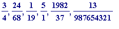 , ...
that is, a number of the form
 where
a
and
b
are natural numbers (i.e. positive whole numbers).
where
a
and
b
are natural numbers (i.e. positive whole numbers).
By a
unit fraction
we will mean a fraction like
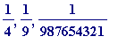
, ... (a fraction with
unit
numerator).
A trivial observation and a simple question (to start with). Trivially,
every
fraction may be expressed as a sum of (repeated) unit fractions - meaning that (e.g.)
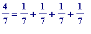
- but can such a representation
always
be found if one
doesn't allow
any unit fraction to be repeated? We are interested only in the case where
 lies between 0 and 1 (thus
in what follows)
lies between 0 and 1 (thus
in what follows)